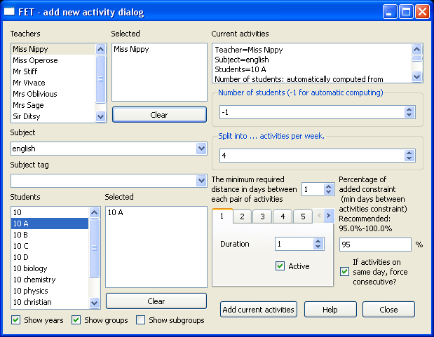

Manual de FET en Català
Manual de FET
Versió 0.7a
darrera modificació 10.01.2009
FET escrit per Liviu Lalescu
http://www.lalescu.ro/liviu/
Manual escrit per Volker Dirr
http://www.timetabling.de/
Manual translated into Catalan by Joan de Gracia
Pàgina Inicial de FET
http://www.lalescu.ro/liviu/fet/
<!--
TODO:
Read livius faq and check if all hints are added.
Read livius manual and check if all hints are added.
Read livius readme and check if all hints are added.
Read livius help/warning forms and check if all hints are added.
-->
Taula de matèries
- Preàmbul
- Trets
- Instal·lant FET
- Utilitzant FET
- Fitxer
- Dades
- Configuració bàsica
- Activitats
- Restriccions
- Pesos de restriccions
- Restriccions d'hora i espai obligatòries bàsiques
- Professors no disponibles, estudiants o espais & ruptures
- N Min dies entre un conjunt d'activitats
- màxims & mínims períodes per dia
- màxims dies per setmana
- Buits
- Hores de Max contínuament
- estudiants d'hora
- l'activitat acaba dia
- 2 activitats són consecutives
- Es demanen 2 activitats
- Buits Min (hores) entre un conjunt d'activitats
- Introduint un màx. d'interval de cada hora dies per setmana
- hora(es) preferida(es)
- Mateix temps de començament
- No solapar-se
- Aula(es) predefinida(es)
- Aula(es) preferida(es)
- Edificis
- Estadística
- Horari
- Configuracions
- Ajuda
Preàmbul
FET és programari lliure per automàticament planificar l'horari d'una escola, escola alta o universitat. Utilitza un algoritme que timetabling ràpid i eficaç. És programari lliure, font oberta, concedida una llicència sota GNU/GPL. Aconsegueixi les últimes notícies i versió de la pàgina inicial de FET oficial (http://www.lalescu.ro/liviu/fet/).
Això és un manual petit amb esperançadorament molts exemples útils.
Les definicions importants es puntuen blaves.
Les pistes útils es puntuen verdes.
Els avisos crítics es puntuen vermells.
Els exemples assenyats es puntuen grocs.
Liviu Lalescu (http://www.lalescu.ro/liviu/) començava el seu projecte al final d'any 2002 mentre estava treballant en el seu diploma. Portava el seu examen en la programació (especialització de programari) el juny de 2003. FET tenia un paleta molt gran de restriccions, però tristament l'algoritme evolutionary era només capaç de resoldre horaris fàcils. Fins i tot grans esforços durant els anys següents en la investigació que l'algoritme genètic no era mai prou bo per resoldre horaris complexos. A l'estiu 2007 l'avançada gran es feia. Un algoritme heurístic nou (basat en canvi recursiu d'activitats) podia resoldre horaris difícils en uns quants minuts.
Trets
THi ha molts trets bonics. FET es pot preocupar per tots els grups (classes/cursos/estudiants), té un paleta molt gran de restriccions i naturalment horaris de styleable xhtml bonics.
|
|
Instal·lant FET
TODO: TODO de requisits: mateix com readme. (realment escrigui'l dues vegades? Potser curtcircuiti el readme i escrigui versió llarga aquí?) TODO: línia d'ordres que utilitza FET
Utilitzant FET
Fins i tot FET és un Qt-application ordenat, hauria de llegir aquest manual prudentment, perquè inclou moltes pistes i avisos com utilitzar-lo correcte.
Llima
Naturalment és possible obrir i salvar una fitxer.
FET
no té una opció de publicar en aquest menú. Als horaris se'ls escriurà
als resultats guia després que es generi un horari. Si us plau llegeixi
horaris Imprimir Horaris d'Impressió de capítol si vol saber com imprimir un horari..
Salvi
el seu conjunt de dades regularment. Especialment si afegeix o modifica
restriccions. FET no té un desfer opció ara mateix. A vegades és molt
difícil desfer l'última modificació. Tampoc si FET no trobava una
solució després d'unes quantes hores potser vol desfer però ja oblidava
últims canvis.
El conjunt de dades salvat contenir només les escenes Configuracó bàsica, Activitats i Restriccions. No inclou la solució d'horari generada.
Necessita fer Horari → Estalviï data+timetable com... si vol salvar l'horari generat. L'horari generat també se salva per defecte al guia de resultats si utilitza Horari → Generi variants de multible.
Dades
Les dades contenen la Configurací bàsica, Activitats i Restriccions. No inclou la solució d'horari generada.
Configuracó bàsica
Nom d'institució & comentaris
El nom d'institució i els comentaris són dades opcionals.
El nom d'institució s'imprimirà com peu a tots els horaris petits (però encara pot dissenyar i amagar-lo fàcilment més tard).
Els comentaris s'imprimiran al començament dels horaris (abans de taula de contingut).
Utilitzi
el comentari per escriure sobre problemes, restricció el més tard
afegida, restricció desapareguda o restriccions que s'haurien de
modificar. No oblidi actualitzar regularment els comentaris. Un
comentari vell és tan dolent com un comentari desaparegut o incorrecte.
Dies per setmana & Períodes per dia
La majoria de les escoles només necessiten dies des de dilluns a divendres.
Això
qualifica són impresos al cap d'horari. Utilitzi mètodes abreujats per
aconseguir taules més petites. (DL. en comptes de dilluns, TUE...).
| Exemple 1 | Exemple 2 | Exemple 3 | Exemple 4 | Exemple 5 |
|---|---|---|---|---|
| 1r Període 2n Període 3r Període 4t Període 5è Període 6è Període |
Període 1 Període 2 Període 3 Període 4 Període 5 Període 6 |
1 2 3 4 5 6 |
08.05 - 08.50 08.50 - 09.35 10.00 - 10.45 10.50 - 11.35 11.50 - 12.35 12.35 - 13.20 |
08.05 08.50 10.00 10.50 11.50 12.35 |
Un Període és una distància a temps.
Els períodes s'imprimeixen a l'horari. Així utilitzi mètodes abreujats per aconseguir horaris més petits. Pot utilitzar qualsevol frase com nom de període.
Li
ha d'importar aproximadament que tots els períodes tinguin la mateixa
distància (és mentre cada dos períodes), perquè FET pren sempre duració
1 per període.
(Excepte si afegeix un període que sempre té activitats especials o una ruptura. En l'exemple 4 un període 09.35-10.00 es pot afegir i aquest període sempre tenir la ruptura de restricció. Però allò és només una intrusió cosmètica.)
Així per aquest exemple una activitat amb la duració 1 porten 45 minuts i una activitat amb la duració 2 porten 90 minuts.
Les activitats no poden aconseguir duració no-enter com 1.5.
Si
FET cannot troba una solució que hauria de pensar a augmentar el nombre
de períodes o el nombre de dies. Si FET pot resoldre el seu conjunt de
dades fàcilment i no sap unes altres restriccions que l'afegeix havia
potser pensar en nombre que disminueix de períodes o nombre de dies.
Però s'hauria de repensar sobre totes les restriccions una altra
vegada! (Especialment professors No disponibles, estudiants o restriccions d'espais.)
*Professors, temes, cordons d'activitat & espais
Afegeixi professors, tema, cordons d'activitat, espais i edificis.
També aquests noms s'imprimeixen a l'horari. Així utilitzi mètodes abreujats per aconseguir horaris més petits.
Un cordó d'activitat és una informació opcional a una activitat.
Els cordons d'activitat són per exemple conferència (lectura), exercici o laboratori.
Si les activitats amb la duració 2 han de començar en períodes estranys (1r, 3r, 5è...) el cordó d'activitat podria ser estrany.
Si algunes activitats han (o havia) ser instruït només al matí el cordó d'activitat podria ser matí.
Pensi com a mínim dues vegades abans d'utilitzar cordons d'activitat. Recomano que per utilitzar l'activitat etiqueti només per posar restriccions. Intenti posar restricció mentre (fàcilment) possible sense un cordó d'activitat. Els cordons d'activitat són molt forts, però totes les activitats tenen només un cordó.
No necessita afegir a casa espais. Normalment tots els grups (classe o professor) tenen és propi espai de casa. Mai no hi haurà un conflicte d'espai si tots els grups tenen és propi espai. Afegeixi només espais que podrien tenir un conflicte (espai d'arts, gym, laboratori de ciència...) o si té més grups que espais.
Tots
els espais tenen la capacitat 1. Així només una activitat es pot posar
per espai. Si té un gym enorme (allò potser pot ser separat en 3 parts
per cortines), llavors ingressa a 3 espais per al gym.
No necessita afegir edificis. Afegeixi només edificis si vol utilitzar una restricció d'edificis (com canvis d'edifici de Max per dia o buits Min entre canvis d'edifici.)
Si
necessita afegir edificis diferents també necessita preocupar-se per
noms d'espai clars globals. Si té el nom d'espai 123 construint A,
llavors no pot anomenar un espai 123 construint B també. Així i
recomanen per incloure el nom d'edifici al nom d'espai. Per exemple
l'espai 123 construint A hauria d'aconseguir el nom A-123.
Anys, grups i subgrups
És molt important entendre la diferència entre anys, grups, subgrups, classes, cursos, divisions i categories. Però no és gaire fàcil. Si us plau llegeixi definicions i tots els exemples.
Any
(forma): Un conjunt d'estudiants en la mateixa fase que escolaritzin.
Per exemple una escola primària alemanya té anys 1 a 4. Un any contenir
(en la majoria dels casos) uns quants grups (classes).
Grup,
Classe, curs i divisió: Un conjunt d'estudiants que visiten les
mateixes activitats. Així coneixen els mateixos professors per estudiar
els mateixos temes alhora.
Categoria: Un conjunt de grups que podrien tenir activitats simultàniament.
Exemple 1: Escola primària
| curs | tema (duració) |
|---|---|
| Biologia Química Física |
Biologia (4), química (1), física (2) Biologia (1), química (4), física (2) Biologia (2), química (1), física (4) |
Curs (divisió de la segona categoria): Un conjunt d'estudiants que troben (a vegades) les mateixes activitats.
Exemple 2: Escola d'ensenyament secundari
Vagi amb compte si té un (gairebé) un 100% omplerts horari. Això les
activitats són planificades simultàniament si l'horari és un 100%
omplerts. Així si fa el planejament d'activitat que ha de ser segur que
l'horari sigui solucionable. En aquest exemple la duració d'un curs és
4+1+2=7. Així és impossible que totes les activitats de física siguin
instruïdes pel mateix professor perquè la física té la duració total
2+2+4=8. Però si la física en el curs de física és instruïda per un
professor diferent llavors en els altres cursos, llavors això corre és
possible.
No importa en aquest exemple si les físiques corren tenir només la
duració de biologia 1. FET es pot preocupar per allò, fins i tot la
duració és diferent entre els cursos.
Que la seva llauna afegeix un segon conjunt de cursos utilitzant la categoria 3.
Pot afegir un tercer conjunt de cursos manualment fent igual com dividir any automàticament seleccionant categories, però és una mica delicat. En alguns casos no necessita afegir una categoria nova (llegeixi pròxima pista).
| curs | tema (duració) |
|---|---|
| religió de christian religió de jewish religió de muslim filosofia |
religió de christian (2) religió de jewish (2) religió de muslim (2) filosofia (2) |
Pensi en categories necessitades primer. La primera categoria sempre hauria de ser la classe. La segona i tercera categoria haurien de ser les categories amb la duració total més llarga. Unes altres categories s'han de fer manualment o per la pista activitats simultànies.
Potser sap que (per accident) cap estudiant és al Grup 10 A i 10 Bio
alhora. Pot suprimir els subgrups corresponents. Potser aconsegueix
millors horaris per això. Però necessita fer-ho només si el seu horari
no són un 100% omplerts. Vagi amb compte! Això també voler dir que
vostè (potser) no pugui posar un estudiants amb grup 10Bio a 10 A més
tard. Potser aconsegueix estudiants nous (perquè els pares mudaven de
casa). Així jo altament no recomana això!
Exemple 3: Institut
Exemple 4: Universitat
Activitats
Preestabliment
Abans d'activitats que se sumen necessita fer una planificació. Actualment FET no l'ajuda amb això. Així ja necessita pensar en totes les activitats. Té cada estudiants el nombre correcte d'activitats (tema i duració)? Té tots els professors el nombre correcte d'activitats (duració)? És possible que les activitats de cursos siguin simultàniament? (Pensi en professors i espais!)
Afegeixi una activitat
 Per afegir una activitat només necessita sumar-se (dobli clic amb el ratolí, o seleccioni i premi entrar) estudiants, tema i professors. Normalment una activitat contenir 1 professor, 1 grup i 1 tema. Sempre hauria d'introduir el nombre d'hores que aquesta activitat s'instrueixen. El n Min dies entre un conjunt de restricció d'activitats és una de les restriccions més importants. Així aquesta restricció s'afegeix per defecte si n'afegeix més llavors un (sub)activity.
Si té problemes d'espai, llavors té possible unes quantes variants, allò no difereix en la solució d'horari. Només difereixen en l'horari imprès visual.
Variant 1: Els horaris més dolços s'imprimeixen si afegeix una categoria nova. I afegeixi activitats com sempre.
Variant 2: Afegeixi "totes" les activitats just com una activitat (com sense problemes d'espai), sumi's com es necessiten moltes pseudoactivitats (sense un professor i espai) com espais i afegeixi temps deMateix temps de començament a aquestes activitats
Variant 3: Afegeixi unes quantes activitats. Cada activitat contenir un professor i un grup. Afegeixi temps Mateix temps de començament a aquestes activitats. Si té més professors llavors agrupa, llavors un o més professors no tenen un grup en la seva activitat. Si té més grups llavors professors, llavors un o més grups no tenen un professor al seu grup.
<!--
Subject native language is instructed 6 periods per week in a 5 days week.
5 periods should be at different days.
The recommended variant is to add this by a single activity.
Add teacher, group, subject, split this activity into 6 activities per week.
Now move to constraint N min dies entre un grup d'activitats and search the correspond constraint.
You need to add this constraint a second time.
One constraint should contain all 6 (sub)-activities amb pes 0%. (Don't check force consecutive, because you can add that activity much sweeter)
The other constraint should contain only 5 (sub)-activities amb pes 100%.
-->
Si us plau llegeixi la secció Peso de les restriccions i N Min de dies entre grups d'activitats.
Es deixa afegir pseudoactivitats. Pseudoactivitats no inclou un conjunt d'estudiants o un conjunt de professors. Sons estúpid, però són útils per preocupar-se per algunes restriccions. Compari seccions Professors no disponibles, estudiants o espais & ruptures, Buits, Hora(es) Preferida(es) i Aula(es) Preferida(es).
Comprovi l'estadística després que totes les activitats s'afegeixin.
Afegeixi una activitat fortnightly
Hi ha dues possibilitats grans per afegir activitats que tenen lloc
una vegada cada dues setmanes. Aquest recomanat és utilitzar un dels
workarounds següents. L'altre és fer-ho en un camí molt exacte.
L'avantatge dels workarounds és una aportació molt simple de les
activitats. El desavantatge és que podria no aconseguir el millor
horari i no és fàcil diferir quinzenalment activitats d'activitats
regulars en l'horari imprès.
Utilitzant un workaround
Tots els workarounds basats en una idea simple: Només afegeixi una activitat fortnightly com a activitat regular i anomeni els estudiants i professors que s'instrueixen només aquesta activitat totes les segones setmanes.
Si als estudiants no se'ls permet tenir buits, llavors les activitats fortnightly haguessin d'aconseguir extrems activitat finalitza el dia o la restricció hora(es) preferida(es)amb primeres parts com temps de preferd. Si els estudiants també necessiten estudiants d'hora, llavors només hauria d'utilitzar extrems activitat finalitza el dia.
Vagi amb compte si té problemes d'espai. En molts casosAula predeterminada no es preocuparà sobre activitats fortnightly. Necessita utilitzar una restricció de aula(es) Aula Preferida restricció.
Variant 2: Afegeixi dues activitats diferents per a això. Això implicar, que les dues activitats es planifiquen a períodes diferents. Així això no es recomana si vostè problemes d'espai, perquè un espai sempre estarà ocupat, ni tan sols això no s'utilitza.
Variant 2: Afegeixi dues activitats diferents per a això. Això implicar, que les dues activitats es planifiquen a períodes diferents. Així això no es recomana si vostè problemes d'espai, perquè un espai sempre estarà ocupat, ni tan sols això no s'utilitza.
Variant 2: Afegeixi només una activitat per a això. Només afegeixi tots els professors i estudiants a una activitat. Això implicar, que les "dues" activitats es planifiquen al mateix període.
Les dues pròximes variants s'haurien d'utilitzar si té problemes d'espai. Ells no difereix en la solució d'horari. Només difereixen en l'horari imprès visual.
Variant 2: Afegeixi dues activitats i afegeixi restricció Mateixa hora de començament a aquestes activitats.Variant 3: Afegeixi les "dues" activitats just com una activitat (com la variant 1), que se suma una pseudoactivitat (amb cap professor i cap espai) i afegeix el restricció Mateixa hora de començament a aquestes activitats
Variant 3: Afegeixi quatre activitats diferents per a això. Això efectuarà que quatre períodes diferents es necessiten! Així en gaires casos això no es recomana. Especialment si té problemes d'espai.
El camí exacte
Afegeixi una activitat d'ensenyament d'equip
La mitjana aritmètica d'ensenyament d'equip dos o més professors instrueixen un grup en el mateix període.
Vagi amb compte si té problemes d'espai. En molts casosAula predeterminada no es preocuparà sobre activitats d'ensenyament d'equip. Necessita utilitzar una restricció de Aula Preferida.
Variant 1: Afegeixi una activitat amb el grup, un professor i ruptura això a 4 activitats. Guardi l'id d'un fora de les activitats de splitted al cap. Afegeixi una altra activitat amb cap grup i l'altre professor. Utilitzi la restricció Mateixa hora de començament per l'altra i lactivitat memoritzada
Variant 2: Afegeixi una activitat amb el grup, un professor i ruptura això a 3 activitats. Afegeixi una segona activitat amb el grup i els dos professor. Afegeixi aquesta activitat al ja existint restricció n Min dies entre un conjunt d'activitats.
Restriccions
Pes de les restriccions
| pes | no. mitjá de reintents |
|---|---|
| 50% 75% 80% 90% 95% 99% 99.5% 99.75% 99.80% 99.90% 99.99% 100.00% |
2 4 5 10 20 100 200 400 500 1000 10000 unlimited |
Totes les restriccions tenen un pes. Un pes d'un 100% volen dir que
aquesta restricció s'hagi de respectar. Una mitjana aritmètica de valor
més baixa que això s'hauria de respectar, no és necessari. És força
difícil explicar la funció exacta, però una il·lustració simple és el
seguir: Un 50% mitjana aritmètica de pes que en mitjana FET torna a
intentar dues vegades per posar una activitat sense un conflicte. Si
FET no pot posar l'activitat sense un conflicte després de 2 vegades
mitjanes es queda el conflicte i intenta posar la pròxima activitat.
Això no és una explicació exacta de l'algoritme, perquè les activitats es podrien inassignar o el cicle es reobria.
Sempre salvi el datafile sota un nom diferent (només numeri'ls) després d'afegir o modificar una restricció.
Comprovi
si el seu horari és (encara) solucionable abans d'afegir restriccions
noves. Podria ser impossible resoldre l'horari.
Tan naturalment és una idea bonica escriure una llista de totes les restriccions necessitades i demanar-los per importància. Però no recomano per posar pes a un 100% a la restricció més important, potser un 99% a la segona restricció important i tan en fins a l'últim.
Recomano per afegir totes les restriccions pas a pas amb el pes un 100% (excepte uns quants n Min dies entre un conjunt de restriccions d'activitats). Si afegeix una restricció amb un altre valor (com màxims dies/períodes/buits) llavors també utilitzar el pes un 100%, però utilitzar un valor alt. Després de tot s'afegeixen restriccions i si FET pot trobar encara una solució, comencen a disminuir els màxims valors de dies/períodes/buits.
Restriccions d'hora i espai obligatòries bàsiques
Les restriccions bàsiques són:
Restriccions d'hora (misc) → Restriccions d'hora obligatòries bàsiques
Restriccions espacials (misc) → Restriccions espacials obligatòries bàsiques
Aquest bàsic impedeix ha de tenir pes un 100% i sempre ha de ser inclòs en el conjunt de dades.
A les restriccions d'hora bàsiques els importa aproximadament que un professor mai no n'hagi d'instruir dos o més activitats al mateix hora. També els estudiants han de tenir màxim una activitat per període.
A les restriccions d'espais bàsiques els importa aproximadament que un espai mai no n'haurà inclòs 2 o més activitats.
Professors no disponibles, estudiants o espais & ruptures
El no disponible i les restriccions de ruptura són:
Restriccions d'hora (professors) → Un professor no està disponible
Restriccions d'hora (estudiants) → Un conjunt d'estudiants no està disponible
Restriccions espacials (espais) → Un espai no està disponible
Restriccions d'hora (misc) → Trenqui's (tots els estudiants de teachers+all no disponibles)
Podria passar que els professors, els estudiants o els espais no estiguin disponibles.
Això les restriccions han de tenir pes un 100%.
Si un professor o estudiant té restricció No disponible, llavors aquest període "lliure" podria ser un buit. Així pensi dues vegades si també utilitza restriccions que compten buits. En comptes de restricció que utilitza No disponible per a un professor o estudiant també pot afegir una pseudoactivitat i utilitzar la restricció Una activitat té un temps de començament preferit. Una pseudoactivitat will no considerat com buit.
També pot utilitzar una pseudoactivitat amb restricció Una activitat té un temps de començament preferit (compari pròxim exemple).
Variant 2: Afegeixi una activitat amb tema emplaçament industrial, cap professor, duració 2 i el conjunt d'estudiants corresponent. Afegeixi una restricció Una activitat té un temps de començament preferit per aquesta activitat al primer periòde del Dilluns. Ara l'horari d'estudiants sembla més dolç, excepte anar amb compte que totes les altres restriccions encara es poden respectar.
La ruptura de restricció és una manera fàcil de dir que tots els professors i els estudiants no estan disponibles.
N min dies entre un grup d'activitats
Aquesta restricció és:
Restriccions d'hora (activitats) → N Min dies entre un conjunt d'activitats
També llegeixi la secció Afegir una activitat.
| curs | tema (duració) |
|---|---|
| ciència de natura art industrial llenguatge estranger |
biologia (2), química (2), física (2) art industrial (6) Francès (4), llatí (2) |
Si el professor d'art industrial voler fer 3 activitats amb la duració 2, però el professor francès voler tenir 4 activitats amb la duració 1, llavors l'horari és impossible de resoldre.
Els dos professors tenen bones raons per les quals necessiten consecutiva la duració 1 o 2. El francès és un tema intel·lectual i 4 activitats amb la duració 1 a dies diferents tindran un progrés d'aprenentatge molt millor. L'art industrial és un tema tècnic i és millor treballar en un projecte sense moltes interrupcions.
Així pensi en conflictes com això tan d'hora com possible. Parli amb els professors, expliqui el problema i trobi un acord. Un potser solució és això: El professor francès tenir 4 activitats amb la duració 1 i pes d'un 100% de restricció Min n dies. Aquesta mitjana aritmètica l'l'industrial professor d'art "només" portar una activitat que és splited a 4 parts (dos amb la duració 2 i dos amb la duració 1). En el sentit estricte aquesta activitat no necessita una restricció Min n dies entre, perquè la restricció de dies de n Min de l'activitat francesa ja preocupar-se per allò. A FET també li importa aproximadament que el llatí s'instrueixi directament abans o després de francès, perquè art industrial necessitar la duració 2. - També tingui un aspecte a la ciència de natura ara. Això també voler dir que sigui impossible que tots els temes tenen només 1 activitat amb duració 2. Si física i el llatí és instruït pel mateix professor llavors les físiques mai no poden tenir consecutius 2 períodes. Si física i el francès és instruït pel mateix professor, llavors cap ciència de natura no pot tenir consecutius 2 períodes.
Si fa el seu planejament de coberta també prudentment ha de pensar en restricció Min n dies entre un conjunt d'activitats (Normalment no en les classes (categoria 1), però en els cursos (categoria 2 i damunt)).
<!--3 activities, with 1 & 2 min n days. see liviu forum spain example -->
màxims & mínims períodes per dia
Els màxims & mínims períodes per restriccions de dia són:
Restriccions d'hora (professors) → Hores de Max diàriament per a un professor
Restriccions d'hora (professors) → Hores de Max diàriament per a tots els professors
Restriccions d'hora (professors) → Hores Min diàriament per a un professor
Restriccions d'hora (professors) → Hores Min diàriament per a tots els professors
Restriccions d'hora (estudiants) → Hores de Max diàriament per a un conjunt d'estudiants
Restriccions d'hora (estudiants) → Hores de Max diàriament per a tots els estudiants
Restriccions d'hora (estudiants) → Hores Min diàriament per a un conjunt d'estudiants
Restriccions d'hora (estudiants) → Hores Min diàriament per a tots els estudiants
El màx. de restriccions i els períodes mínims per dia per a estudiants són útils si vol un dia equilibrat.
| Grup | activitats per setmana |
|---|---|
| 1 A, 1B 2 A, 2B 3 A, 3B 4 A, 4B |
20, 19 21, 20 25, 24 30, 29 |
Així sense cap restricció podria passar que grup que 1B tenen 6 períodes dilluns a dimecres, 1 període dijous i cap període divendres.
Afegeixi hores de Max de restricció diàriament per a un conjunt d'estudiants amb 5 màxims períodes i un 100% a any 2. No pot afegir això restriccions a anys 3 i 4.
No necessita afegir hores de Max de restricció diàriament per a tots els estudiants amb 6 màxims períodes i un 100% a any 3 i 4, perquè el seu horari tenir només 6 períodes per dia.
No necessita afegir hores de Min de restricció diàriament per a un conjunt d'estudiants per agrupar-ne 4 A i 4B, perquè no té sentit.
Pot afegir hores de Min de restricció diàriament per a un conjunt d'estudiants amb 5 períodes de períodes mínims per agrupar-ne 3 A, però potser això és a difícil. No pot afegir aquesta restricció per agrupar 3B. Així recomano per afegir un mínim de 4 períodes per dia a any 3.
És potser útil si any 2 tenen 4 períodes mínims per setmana.
Pot afegir hores de Min de restricció diàriament per a un conjunt d'estudiants amb 4 períodes de períodes mínims per agrupar-ne 1 A, però potser això és a difícil. No pot afegir aquesta restricció per agrupar 1B. Així recomano per afegir un mínim de 3 períodes per dia a any 1.
En comptes d'utilitzar màxims períodes per dia pot utilitzarhora(es) preferida(es). No és igual (és només el mateix si també utilitza restricció sense buits i alumnes d'hora), excepte molt similar, més ràpid i (potser) una mica més fort.
Ho pot fer similar a professors, excepte pensar sempre dues vegades. En la meva opinió els màxims períodes per restricció de dia és només útil si les seves institucions té molts períodes per dia.
La restricció diària de períodes mínima
per a un professor és (en la meva opinió) no sempre útil. Abans
d'utilitzar això restriccions que hauria de fer això: Utilitzi períodes
màxims de restricció per dia per aconseguir un horari més balanced. Pensi en utilitzar la restricción dies max per setmanaper
a cada professor. És potser molt millor, perquè té un esbós que
l'efecte i el professor no necessiten conduir a la institució.
A gaires escoles no es permet que s'ometin activitats. Si els
professors dificultats han de ser representats per uns altres
professors podria tenir problemes grans si se suma a gaires períodes mínims restricció diària per a professors, perquè hi podria haver no prou professors per cobrir activitats. Si us plau llegeixi el capitul Periodes lliures dels professors.
Variant 2: Afegeixi una pseudoactivitat al professor problemàtic (Una activitat amb el nom de professors, però sense un estudiants). Sigui carefull si té professor a casa restriccions d'espai.
dies max per setmana
La restricció de dies max per setmana és:
Restricció horaria (professors) → Max dies per setmana per a un professor
Naturalment si la garantia de contracte de treball un màxim nombre de dies per setmana, llavors això és una restricció important.
Un horari no és solucionable si afegeix màx. de restricció dies per setmana amb només 3 dies i el pes un 100% si el mateix professor instruir un conjunt de 4 o més activitats que tenen restricció N min dies entre un grup d'activitats amb pes 100%. Vagi amb compte! La majoria de les activitats tenen aquesta restricció (sigui comparable Afegir una activitat).
Recomano per comprovar aquesta restricció una altra vegada després de tota l'altra restricció són afegits, la majoria d'ells ja tenen el pes un 100% i els FET poden trobar encara una solució.
Molts professor com un dia lliure. Comprovi l'estadística de professors. Comprovi si un professor és capaç a (potser) aconseguir lliure dia. Així el nombre de períodes per dia del professor ha de ser més baix o igualar llavors el nombre de períodes per setmana de l'horari menys el nombre de períodes per dia. També comprovació si un nombre més baix de dies feiners fa no controvert a una restricció (especialment una restricció N min dies entre un grup d'activitats). Affegeixi restricció Max dies per setmana per a un professor amb pes 100% si res parlar-hi. No se sumi a gaires restricció a un hora. Potser comenci amb el professor que instrueix el nombre més baix de períodes per setmana. Comprovi si l'horari és encara solucionable. Afegeixi el pròxim professor si és encara solucionable. Tregui la restricció si l'horari no és solucionable i intenti afegir el professor següent.
A
gaires escoles no es permet que s'ometin activitats. Si els professors
dificultats han de ser representats per uns altres professors a qui
podria aconseguir problemes grans si se suma a gaires dies lliures,
perquè hi podria haver no prou professors per cobrir activitats. Si us
plau llegeixi el capítol Periodes lliures dels professors.
Si necessita restricció com màx. els dies per setmana per a conjunt
d'estudiants només afegeixen una activitat amb els estudiants endurits,
subjectes "lliure", cap professor i el nombre de períodes per dia del
seu horari com duració.
Si necessita similar restricció com màxims dies per setmana per a conjunt d'estudiants que pot pensar a efectuar amb hores de Min de restricció diàriament per a un conjunt d'estudiants.
Si necessita similar restricció com màxims dies per setmana per a tots els professors que pot pensar a efectuar amb hores de Min de restricció diàriament per a tots els professors.
Buits
Les màximes restriccions de buits són:
Restriccions d'hora (professors) → Buits de Max per setmana per a un professor
Restriccions d'hora (professors) → Buits de Max per setmana per a tots els professors
Restriccions d'hora (professors) → Buits de Max per dia per a un professor
Restriccions d'hora (professors) → Buits de Max per dia per a tots els professors
Restriccions d'hora (estudiants) → Buits de Max per setmana per a un conjunt d'estudiants
Restriccions d'hora (estudiants) → Buits de Max per setmana per a tots els estudiants
Utilitzi el pes un 100% i comenci amb un Max alt buits per setmana per a tot el valor de professors. Intenti resoldre l'horari i disminuir el valor pas a pas.
A
gaires escoles no es permet que s'ometin activitats. Si els professors
dificultats han de ser representats per uns altres professors a qui
podria aconseguir problemes grans si se suma a "bones" restriccions de
buit, perquè hi podria haver no prou professors per cobrir activitats.
Si us plau llegeixi el capítol Periodes lliures dels professors.
Això sonar just si utilitza buits de Max per setmana per a tots els professors en comptes de valors diferents per a cada professor al costat de buits de Max de restricció per setmana per a un professor.
Però podria reflexionar sobre hasted. Per exemple el xef i és
representant sempre tenir molta paperassa a l'oficina. Així no tenen
realment buits, ells poden ús oportú això "buits". Tampoc els
professors d'aprenents no tenen realment buits, perquè també han
d'observar activitats d'uns altres professors. L'horari podria ser
solucionable si uns quants professors tenen un màx. més alt buits per
valor de setmana.
Potser
FET pot resoldre l'horari si tots els professors tenen 2 màxims buits
per setmana, però no pot resoldre l'horari si tots els professors tenen
1 màxim buit per setmana. Potser és just si tots els professors que
tenen dies lliures aconsegueixen un màx. de restricció els buits 2 i
tots els professors que estan treballant tots els dies tenen el buit
màxim de restricció 1.
No oblidi un professor si utilitza buits de Max de restricció per setmana per a un professor en comptes de buits de Max per setmana per a tots els professors.
Variant 1: Utilitzi restricció Max d'hores continues. Variant 2: Si us plau llegeixi exemples previs una altra vegada. Ben aviat: Afegeixi pseudoactivitats i potser també la restricció hores preferides.
Max d'hores continues
Les màximes hores contínuament les restriccions són:
Restriccions d'hora (professors) → Hores de Max contínuament per a un professor
Restriccions d'hora (professors) → Hores de Max contínuament tots els professors
Restriccions d'hora (estudiants) → Hores de Max contínuament un conjunt d'estudiants
Restriccions d'hora (estudiants) → Hores de Max contínuament per a tots els estudiants
Això les restriccions poden ser utilitzades afectar el nombre mínim de buits per dia. Si algú tenir una restricció Max hores contínuament amb el valor 4, llavors això mitjana aritmètica ell will mai professor més llavors 3 hores contínuament. Així si ell treballar 4 hores per dia, llavors tindrà com a mínim 1 buit. Si ell treballar 7 hores al dia, llavors tindrà com a mínim 2 buits.
alumnes d'hora
La restricció d'alumnes d'hora són:
Restriccions d'hora (estudiants) → Un conjunt d'estudiants comença d'hora
Restriccions d'hora (estudiants) → Tots els estudiants comencen d'hora
Un estudiants dia sempre començarà en la primera part amb una activitat si utilitza aquesta restricció (excepte que també utilitzava una restricció com en la secció Professors no disponibles, estudiants o espais & ruptures al primer periode).
activitat al final del dia
Les restriccións d'activitats al final del dia són:
Restriccions d'hora (activitats) → Una activitat acaba estudiants dia
Restriccions d'hora (activitats) → Un conjunt d'activitats acaben estudiants dia
Aquesta restricció és molt important si els estudiants tenen restricció sense buits i no tots els estudiants d'un grup (o uns quants grups) visiten aquesta activitat. Pot ser les activitats quinzenals també necesiten aquesta restricció.
Variant 1: Afegeixi una activitat amb tema d'ensenyament especial, que se suma el professor correcte, duració i l'any (en comptes d'això també pot afegir tots els grups, però no sembla tan bo en l'horari imprès). Afegeixi restricció Una activitat acaba estudiants dia aquesta activitat.
Variant 2: Si té unes quantes activitats que han d'acabar un estudiants dia i que les activitats tenen un atribut comú (per exemple un tema de speacial), llavors pot utilitzar restricció conjunt A d'estudiants finals d'activitats dia per seleccionar unes quantes activitats amb una restricció senzilla.
Si necessita començaments d'activitat dia, llavors utilitza Una activitat té un conjunt d'hores preferides i esculli cada primer periode com hora possible.
2 activitats són consecutives
Les 2 activitats són restricció consecutiva és:
Restriccions d'hora (activitats) → 2 activitats són consecutives
Mitjana aritmètica consecutiva de restricció que això les activitats són planificades al mateix dia sense cap buit, ruptura o una altra activitat entre ells.
Es demanen 2 activitats
Les 2 activitats es demanen restricció és:
Restriccions d'hora (activitats) → Es demanen 2 activitats
Restricció demanada voler dir que la primera activitat s'hagi de planificar abans del segon activitiy.
Vagi amb compte amb aquesta restricció, perquè és molt restringir l'horari molt.
En la meva opinió aquesta restricció sona bonica, excepte ensnare a un ús inútil.
Si demana dues activitats, llavors podria passar que listining sigui
dilluns i el practicar és dimarts. Els sons corregeixen i potser també
el so com això es necessita, excepte pensar més prudentment. Què passar
si l'activitat dimarts no té lloc a causa de professor malalt, els
estudiants malalts, vacances, responen dia, viatge escolar o unes
altres raons. L'ordre "necessitat" es confon. És gairebé impossible
quedar-se tal ordre l'any sencer. Així per què afegint una restricció
tan estricta si no es pot quedar l'ordre durant l'any sencer? Just a
causa de la primera setmana? En la meva opinió que són bestieses. Fins
i tot si que la primera setmana comença amb un practicar lliçó que
realy no importa. Té prou altres coses per assassinar la primera lliçó
(arribi a conèixer els seus estudiants, comprovar el seu coneixement
previ, dóna una visió de conjunt al voltant de l'any o potser només fer
una lliçó de llista.).
Així en la meva opinió aquesta restricció només s'hauria d'utilitzar si
també utilitza un conjunt A de restricció d'activitats tenen mateix
començant dia (algunes hores) a allò activitats.
Buits Min (hores) entre un conjunt d'activitats
Els buits Min (hores) entre un conjunt de restricció d'activitats és:
Restriccions d'hora (activitats) → Buits Min (hores) entre un conjunt d'activitats
Els buits de Min de restricció (hores) entre un conjunt d'activitats signifiquen que hi hagi un nombre mínim de períodes entre 2 activitats. Així aquesta restricció és alguna cosa com el contrari de restricció consecutiu.
Introduint un màx. d'interval de cada hora dies per setmana
L'Explotació en un màx. d'interval de cada hora dies per restriccions de setmana són:
Restriccions d'hora (professors) → Un professor introdueix un màx. d'interval de cada hora dies per setmana
Restriccions d'hora (professors) → Tots els treballs de professors en un màx. d'interval de cada hora dies per setmana
...
hora(es) preferida(es)
Les restriccions de time(s) preferides són:
Restriccions d'hora (activitats) → Una activitat té un temps de començament preferit
Restriccions d'hora (activitats) → Una activitat té un conjunt de ranures d'hora preferides
Restriccions d'hora (activitats) → Un conjunt d'activitats tenen un conjunt de ranures d'hora preferides
Restriccions d'hora (activitats) → Un conjunt de subactivitats tenen un conjunt de ranures d'hora preferides
Restriccions d'hora (activitats) → Una activitat té un conjunt de temps de començament preferits
Restriccions d'hora (activitats) → Un conjunt d'activitats tenen un conjunt de temps de començament preferits
Restriccions d'hora (activitats) → Un conjunt de subactivitats tenen un conjunt de temps de començament preferits
Els temps preferits són restriccions molt fortes i fonamentals, pot gairebé fer tot amb ells. Especialment la restricció A s'enduria de (sub)-activities té un conjunt de temps preferits és molt útil (compari pròxim exemple). Es pot preocupar per activitats amb el mateix professor, els mateixos estudiants, el mateix tema o el mateix cordó d'activitat. Però no s'oblidi, totes les activitats tenen només un cordó d'activitat!
| 1r Període 2n Període 3r Període 4t Període 5è Període 6è Període |
permès permès permès no permès permès no permès |
Tingui un aspecte a l'exemple correcte.
Una activitat amb la duració 2 pot ser començament al període 1 i 2 si utilitza restricció temps preferit ranura.
Però una activitat amb la duració 2 pot començar al període 1, 2, 3 i 5 si utilitza restricció temps de començament preferit.
Ara el professor pot instruir coses noves o escriure proves en activitats que tenen un període anterior i només practiquen en activitats que es planifiquen més tard.
Com sempre prefereixo utilitzar pes d'un 100%. Si aquesta restricció és a difícil, llavors potser només fer-ho amb el primer component. Si l'horari és quiet a fàcil resoldre'l pot potser també fer-ho amb el 3r component o amb períodes 1 a 3.
Però vagi amb compte. Algunes activitats encara han de ser capaces de planificar tard! Així no hauria d'utilitzar conjunt A de restricció d'activitat té un conjunt de temps preferits per fer això.
Naturalment no faci això amb tots els temes, perquè alguns temes pot/ha de ser planificat últim.
Mateixa hora de començament
Les mateixes restriccions d'hora de començament són:
Restriccions d'hora (activitats) → Un conjunt d'activitats tenen mateix començant temps (day+hour)
Restriccions d'hora (activitats) → Un conjunt d'activitats tenen mateix començant dia (qualsevol hora)
Restriccions d'hora (activitats) → Un conjunt d'activitats tenen mateix hora de començament (alguns dies)
De la manera més fàcil que no necessita el conjunt A de restricció d'activitats tenen mateix començant temps (day+hour). Només traslladi tots els professors necessitats i estudiants en una activitat. Però per això aconsegueixen només un espai. Però hi ha com a mínim 3 exemples necessaris:
Aquest treball bé si el nombre de grups/classes no és estrany en un any. Si el nombre de grups és estrany, llavors només connectar a classes de dos anys diferents junts (potser 10 C i 9 C).
Variant 2: Afegeixi una activitat amb els dos professors i la duració 1. Afegeixi una segona activitat amb el professor de llenguatge natiu i sumi la duració 3. Afegeixi la primera activitat senzilla a la restricció de dies de n Min generada automàtica de les últimes activitats.
Sense solapament
El no restricció d'encavalcament és:
Restriccions d'hora (activitats) → No s'estan solapar un conjunt d'activitats
Activitats amb mateix professor o mateix estudiants o mateix espai són mai no solapar-se per defecte. (compari Restricciones básiques de temps i aules). Així aquesta restricció només es necessita en situacions molt especials.
Aula(es) Predeterminada(es)
es restriccions d'espais de casa són:
Restriccions espacials (professors) → Un professor té un espai de casa
Restriccions espacials (professors) → Un professor té un conjunt d'espais de casa
Restriccions espacials (estudiants) → Un conjunt d'estudiants tenen un espai de casa
Restriccions espacials (estudiants) → Un conjunt d'estudiants tenen un conjunt d'espais de casa
A casa els espais són els espais d'omissió. S'assignen si no hi ha cap restricció Aula(es) preferida(es).
Moltes institucions tenen a casa espais a grups o professors. No necessita afegir a casa restriccions d'espai si tots els grups (o professor) tenir és propi espai de casa. Així no necessita afegir a casa restriccions d'espai perquè ja sap que mai no hi haurà un conflicte. Afegeixi a casa restriccions d'espais només si alguns grups (o professors) comparteixen espais o si vol mostrar-los a l'horari.
FET
no assignava un espai de casa si una activitat contenir més llavors 2
conjunts de professors o estudiants. Utilitzi una restricció Aula(es) preferida(es) per a allò activitats si necessita assignar un espai.
No utilitzi professors a casa restriccions d'espai i estudiants a casa restriccions d'espai al mateix hora.
llegeixi el capítul "Aula preferida" abans d'afegir "Aula Predeterminada".
Variant 1: Comprovació si 2 (o més) professor pot compartir un espai de casa. Així el nombre de períodes d'ensenyament de tots els professors que comparteixen una habitació individual pot ser màxim el nombre de períodes per setmana de la institució. Afegeixi el mateix espai a tots els professors que haurien de compartir una habitació individual (el professor A de restricció té un espai de casa).
Variant 2: Potser té mala sort i no hi ha cap professor que pugui compartir una habitació individual. En aquell cas un (o aproximadament) professor necessitar-ne dos (o més) a casa espais (el professor A de restricció té un conjunt d'espais de casa). Abans que utilitzant aquesta restricció hagués de pensar en restricció que utilitzava Una activitat té un espai preferit a activitats d'aquell professor.
Comptava el nombre de períodes d'espai de casa de tots els professors i escrivia una llista de professor que podria compartir un espai de casa. Però quins professors haurien de compartir un espai de casa senzill?
Comprovi
si els professors que instrueixen en el mateix espai especial poden
compartir un espai de casa. Per exemple professor T1 instruir
matemàtica i la física i el professor T2 instrueixen història i física.
La física s'instrueix en el laboratori. Matemàtica i la història
s'instrueix en l'espai de casa. Així si professor T1 instruir física,
llavors el laboratori és utilitzat per T1. Així T2 mai no podrà
instruir física alhora com el T1, però allò també signifiquen que
l'espai de casa de T1 sigui lliure i T2 pugui utilitzar aquell espai de
casa.
Vagi
amb compte si comparteix un espai especial amb una altra institució i
tan vostè tampoc l'espai A d'ús no està disponible alhora. Per exemple
vostè té un hugh gym que en té 3 espai però no el pot utilitzar tots
els dies perquè també un altre ús escolar això. Professor T3 instruir
matemàtica i els esports i el professor T4 instrueixen història i
esports. Així això professors poden potser mai no compartir un espai de
casa, perquè han d'utilitzar el gym alhora.
A
vegades (especialment si només necessita l'últim enllaç de 2
professors) és millor si els professors amb el nombre més baix de
períodes d'espai de casa comparteixen un espai.
Aula(es) preferida(es)
Les mateixes restriccions d'hora de començament són:
Restriccions espacials (tema) → Un tema té un espai preferit
Restriccions espacials (tema) → Un tema té un conjunt d'espais preferits
Restriccions espacials (subject+activity) → Un cordó de subject+activity tenir un espai preferit
Restriccions espacials (subject+activity) → Un cordó de subject+activity tenir un conjunt d'espais preferits
Restriccions espacials (activitat) → Una activitat té un espai preferit
Restriccions espacials (activitat) → Una activitat té un conjunt d'espais preferits
Les
restriccions d'espai Preferd tenen una prioritat més alta llavors a
casa restriccions d'espai. Això restriccions són normalment utilitzat
per a espais especials.
Afegeixi tema A de restricció té un conjunt d'espais preferits si té uns quants espais de química.
Afegeixi Un tema té un conjunt d'espais preferits.
Així podria passar que la física s'instrueixi en laboratori de química que fins i tot l'espai de física és lliure. Així si us plau comprovar-se si això passar i manualment corregir-lo. <!--**xxx mit ph lab kleiner 100%! DAS IST FALSCH! WARUM -->
Variant 1: Escrigui tots els grups molt grans. Afegeixi activitats de maniquins amb sotmetre esport, professor de maniquins i sense un conjunt d'estudiants. Sumi's conjunt A de restricció d'activitats tenen mateix temps de començament (day+hour) de connectar una activitat de maniquins amb dues activitats d'esport grans. No necessita el professor de maniquins, excepte això potser ajudar-lo comprovant l'horari. No s'oblidi que aquest professor de maniquins potser infringir unes altres restriccions (especialment restriccions de buits)
Variant 2: Escrigui tots els grups més petits. Afegeixi Un conjunt d'activitats té mateix temps de començament (day+hour) de connectar 3 grups d'activitat d'esport petits junt.
Variant 1: -->Només afegeixi l'activitat com restricció normal i d'ús que Una activitat té un espai preferit (sub)-activity
<!-- Variant 2: You should add an activity with the group, one teacher and split it into only 3 activities.
Add a second activity with the group and both teacher.
Add this activity to the already existing min n days constraint.
Care about correct room constraints of this activities.
The exact way depend on your special way of added room constraint. -->
Edificis
Les restriccions d'edificis són:
Restriccions espacials (professors) → L'edifici de Max canvia per dia per a un professor
Restriccions espacials (professors) → L'edifici de Max canvia per dia per a tots els professors
Restriccions espacials (professors) → L'edifici de Max canvia per setmana per a un professor
Restriccions espacials (professors) → L'edifici de Max canvia per setmana per a tots els professors
Restriccions espacials (professors) → Buits Min entre canvis d'edifici per un professor
Restriccions espacials (professors) → Buits Min entre canvis d'edifici per tots els professors
Restriccions espacials (estudiants) → L'edifici de Max canvia per dia per a un conjunt d'estudiants
Restriccions espacials (estudiants) → L'edifici de Max canvia per dia per a tots els estudiants
Restriccions espacials (estudiants) → L'edifici de Max canvia per setmana per a un conjunt d'estudiants
Restriccions espacials (estudiants) → L'edifici de Max canvia per setmana per a tots els estudiants
Restriccions espacials (estudiants) → Buits Min entre canvis d'edifici per un un endurir-se d'estudiants
Restriccions espacials (estudiants) → Buits Min entre canvis d'edifici per tots els estudiants
<!-- hint: kann benutzt werden um entweder nur Nachmittags oder nur vormittags zu unterrichten-->
Estadística
Comprovi els professors i estadística d'estudiants abans de generar un horari. Pot comprovar si totes les activitats estan (esperançadorament) afegides correcte. És també útil comprovar l'estadística si vol afegir algunes restriccions. (com màxims dies per setmana o màxims buits)
Horari
Potser no tots els horaris són solucionables. Tregui restriccions si FET fracassa a trobar una solució. Contacti's amb l'autor si sap que una solució sigui possible. No se sumi a gaires restriccions en una època i sempre estalviï amb un nom de fitxer nou.
Generant un horari
Hi ha dues maneres diferents de generar horaris:
horari → generi nou
horari → generi variants múltiples
Generant un horari és molt procés estocàstic. Així podria passar que generar un horari només necessitar uns quants segons i generant un horari amb el mateix conjunt de dades necessitar el proper temps uns quants minuts. No puc dir quant temps és necessitat al seu horari, però sé conjunt de dades que necessiten que resolguin unes quantes hores fins i tot en un ordinador modern.
No dubti si el nombre d'aturada d'activitats posada o fins i tot disminució a vegades. Allò és normal. Només provi algunes llimes de mostra. Són tots solucionables.
Vegi un horari
Si generava un horari senzill per l'horari → generi nou, pot veure els horaris a prop:
horari → vista (estudiants)
horari → vista (professors)
horari → vista (espais)
*** pot tancar activitats aquí *** que necessitar-ho? Bon exemple?
Recomano per veure els horaris amb un navegador web. Se salven en el
format de html. En sistemes de Linux s'emmagatzemen dins ~/fet-results/ i en sistemes de Windows s'emmagatzemen en un subdirectori /results/ del guia de FET.
Abans de llançar un horari
Recomano per fer quatre coses:
- Hauria de dir totes les restriccions per les quals vol preocupar-se a tots els professors a una reunió o per un paper. Demani tots els professors si que les restriccions són correctes o si les restriccions falten. Potser està millor si l'altre professor ha d'escriure totes les seves restriccions i desitja. Així no oblidarà que una restricció i ningú el poden ofendre més tard que no es preocupava per una restricció especial. Parlant de restriccions en una reunió que l'altre professor entendrà millor per què tenen alguns més buits llavors altres i això reduiran molts problemes i malentesos.
- Comprovació el
conflicts.txtfitxer en el guia de resultat. - Si la seva institució necessitar cobrir professors dificultats que hauria d'aturar el
Teachers' Free Periodsfitxer en el guia de resultat. (compari Periodes lliures dels professors) - Abans que alliberant un horari per als estudiants hagués d'alliberar un horari no oficial per als professors. Faci allò tan d'hora com possible, així els altres professors poden aturar el seu treball.
És molt important fer allò abans que el semestre comenci. Normalment una institució fa una reunió abans del proper semestre començar, així ho hauria de fer com a molt tard a aquesta reunió! Naturalment això dos mitjans de pistes que ha de treballar una mica més abans que pugui llançar un horari, però tingui molts més problemes i treballar si llança un horari de vagonetes.
Com canviar un horari que funciona?
Abans de canviar un horari que funciona
Sigui crític vostè mateix. Es preocupava per les pistes que es descriuen al capítol Preparació? Així demana restriccions als professors abans de llançar un horari i ser alliberat un horari no oficial primer?
Si no li importava aproximadament que tingui mala sort. Afegeixi les restriccions necessitades i preocupi's per restriccions noves (vegi-hi més avall). No oblidi que per preocupar-se aproximadament això insinua aquesta vegada!
Si li importa aproximadament que allò insinuï hauria de preguntar per què necessita canviar l'horari actual.
Si un professor oblidava dir-li una restricció i veu que no és necessari, recomano per ser rígid. No sigui a amable i cortès. No afegeixi la seva restricció i no generi un horari nou. Recomano que, perquè primer de tot ser segur que podria aconseguir una avaria nova resolent-ne un altre. Especialment perquè hi ha restriccions noves actualment no sap (vegi-hi més avall). Aconseguirà molts problemes si no s'hi preocupa! En segon lloc uns altres professors també vindran més tard i preguntaran perquè les restriccions noves, sinó potser vostè no us hi podreu preocupar i/o aconsegueix avaries noves per allò. Així si es preocupa per un professor que no es preocupava per vostè (Ja li demanava que el digués perdent restriccions i sent-li demanat comprovar l'horari no oficial!) només tindrà molt treball i molts problemes a l'escola. Només es desagradarà a tots els altres professors i alguns podrien pensar que doni privilegis especials a uns quants professors. Només sent estricte l'altre professor el respectarà terminis en el futur. Naturalment s'han d'afegir restriccions necessàries.
Potser es pregunta per què estic parlant d'avaries noves, perquè
seguia la meva recomanació i pes de conjunt de totes les restriccions a
un 100% i FET trobava una solució sense cap conflicte. Però per això
"només" l'horari sencer és just i conflicte lliure. Alguns professors
potser no veuen l'horari sencer, ells potser només veure el seu horari
personal i allò podria ser no tan bo com abans de.
Exemple: La primera vegada afegia totes les restriccions amb pes d'un
100%. Llavors afegia buit màxim de restricció per setmana i reduïa
aquell valor pas a pas. FET podia resoldre l'horari amb 5 màxims buits
per setmana, però no era capaç resoldre'l amb 4 buits per setmana. Així
llançava horari amb 5 màxims buits per setmana. Alguns dies més tard
canviava l'horari que funcionava (Afegia o canviava algunes
restriccions). Afortunadament FET era encara capaç així resoldre
l'horari amb 5 màxims buits per setmana. Així l'horari "sencer" és just
i el llançava. Però alguns professors podrien ser enfadats, perquè
portaven 1 o fins i tot 0 buits només en l'horari vell per accident. En
l'horari nou tenen més (fins 5) buits. Així veu el problema? Algun
xicot podria ser enfadat, però sumant-se una restricció amb un màx. més
baix buits per setmana a allò professors no és bo, perquè no és just
pels altres professors i també l'horari serà molt més difícil (o fins i
tot impossible) de resoldre. Allò és per què recomano Per "mai no
canviar un horari que funciona" si no és necessari.
Canviant un horari que funciona
Si ha de regenerar l'horari s'ha de preocupar per restriccions noves, no només el desaparegut! Alguns professors tenen lliures (per accident) períodes lliures o dies fins i tot sencers. Aquest professor potser ja tenir algunes altres (privat) activitats que no sap! Podrien tenir consulta per a un doctor, no té un babysitter per als seus nens... . Així pregunti a tots els professors si tenen períodes lliures obligatoris ara. Sumi's això restriccions (per norma professor A no és disponible). També afegeixi la restricció desapareguda. Esperançadorament FET pot trobar encara una solució. Si no vostè ha de pensar sobre augmentar el nombre de màxims buits o potser també traient algunes restriccions.
Periodes lliures dels professors
| Mr. Coverwood | |||
|---|---|---|---|
| MON | TUE | WED | |
| 1 | 5a math |
5a math |
--- |
| 2 | --- | --- | --- |
| 3 | 6b math |
--- | --- |
| 4 | --- | --- | 5a math |
| 5 | --- | --- | --- |
| 6 | 7c math |
6b math |
--- |
A gaires escoles no es permet que s'ometin activitats. Hi ha moltes raons per les quals es podria ometre una activitat: Un professor és potser malament, és sobre un viatge escolar amb la seva classe, visitar altra educació... .
Si els professors dificultats han de ser representats per uns altres professors podria tenir problemes grans si se suma a "bones" restriccions de buit, a gaires "dies mínims per setmana" o a "hores mínimes" estrictes "per dia" restriccions a professors. El problema és que hi podria haver no prou professors per cobrir activitats. Naturalment el nombre de períodes lliures a tots els professors són encara igual, però especialment molts professors amb dies lliures volen que necessiti una escola molt lleial. Aquella casualitat d'augment de restricció que els professors hagin de representar al seu dia lliure uns altres professors! Així podria aconseguir problemes per allò, principalment si pot denunciar que professors només uns quants minuts o hores abans que hagi de representar una activitat. El professor és potser no a casa, perquè ell fer unes altres coses al seu dia lliure. Tan sempre comprovi el Període Lliure dels "Professors" horari davant de vostè alliberar un (no oficial) horari.
Recomano per comprovar la taula "Menys Detailed" abans que llanci un
horari. Només si té una escola gaire lleial potser necessita comprovar
només la taula "Detallada".
Puny de tot el que necessita comprovar tots els períodes de la setmana.
Tingui un aspecte si hi ha prou professors per període. Si veu un
període amb només un professor això voler dir que pugui cobrir només un
professor malalt en aquell període. Així si dos professors són malalts
a l'aproximadament dia no pot cobrir les dues activitats. Si hi ha un
període buit, llavors ni tan sols no pot cobrir una activitat senzilla
en aquella època.
Per al seu treball diari normalment utilitza l'horari "Menys Detailed". Utilitzi la taula "detallada" només en l'emergència (perquè en taula el Menys Detailed no són prou professors per cobrir totes les activitats).
Hi ha els períodes lliures dels professors diferents visible a la taula.
A la taula "Menys detailed" són 5 classes diferents dels períodes
lliures dels professors: buits senzills, buits d'hostes, buits grans,
s'ha de quedar més llarg i ha de venir més d'hora.
A la taula "detallada" és també això classes de professors: s'ha de
quedar molt més llarg, ha de venir dia molt anterior, lliure i no
disponible.
| Mr. Coverwood | |||
|---|---|---|---|
| DL. | DT. | CASI'S | |
| 1 | 5a matemàtica |
5a matemàtica |
ha de venir molt més primer |
| 2 | single buit |
frontera buit |
ha de venir molt més primer |
| 3 | 6b matemàtica |
gran buit |
ha de venir més d'hora |
| 4 | frontera buit |
gran buit |
5a matemàtica |
| 5 | frontera buit |
frontera buit |
s'ha de quedar més temps |
| 6 | 7c matemàtica |
6b matemàtica |
s'ha de quedar molt més llarg |
"ha
de venir més d'hora": El professor ha de venir 1 període més primer a
escola com normal. Així ha importat per dir que professor tan primer
com possible allò ell ha conductor més primer com normal a escola.
"ha
de venir molt més primer": El professor ha de venir 2 o més períodes
més primer a escola com normal. Així ha importat per dir que professor
tan primer com possible allò ell ha conductor més primer com normal a
escola.
"s'ha de quedar més llarg": El professor s'ha de quedar 1 període més temps com normal.
"s'ha de quedar molt més llarg": El professor ha de tenir 2 anys o més període més llarg com normal.
Buit:
El professor no ha de venir més d'hora i no s'ha de quedar més llarg,
perquè ja instruïa estudiants en aquell dia i instruirà (altre)
estudiants més tard aquell dia.
"buit senzill": El professor té una activitat directament abans I directament després d'aquell període lliure.
"buit
de frontera": El professor té una activitat directament abans O
directament després d'aquell període lliure. (Així té un buit
directament abans O directament després d'aquell període lliure.)
"buit gran": El professor té un període lliure (buit) directament abans I directament després d'aquell buit.
Potser es pregunta per què falten els professors que tenen una ruptura en aquesta taula. Força fàcil. Si aquell període és una ruptura, mai no necessitarà cobrir una activitat, perquè tots els professors tenen lliure en aquella època.
Si necessita cobrir una activitat, ha d'escollir un professor en el Període Lliure dels "Professors" taula. És difícil de dir quin professor hauria d'utilitzar. Intentava demanar els professors per una regla general. Però en alguns casos és millor escollir un altre professor primer. Potser és millor escollir un professor que instrueix el mateix grup primer. Potser és millor escollir un professor que instrueix el mateix tema. Potser és millor no escollir el primer professor, perquè ell ja instruir tants períodes aquest dia o setmana.
Potser després d'una mica de temps entén millor aquest horari i vol amagar les descripcions en aquell horari, perquè només inunden l'horari de la informació innecessitada (perquè és cervesa per diferir els períodes lliures pels colors diferents.). Pot amagatr les descripcions amb Amagar Elements amb css.
Imprimir Horaris
L'eina d'omissió per imprimir un horari és un navegador web, no un programa d'oficina (com Escriptor d'OpenOffice o Calc), perquè els horaris se salven en el format de html i els filtres d'importació d'eines d'oficina no són gaire bons de moment.
Tots els Navegadors Web tenen avantatges diferents. Canviar la
mida de tipus de lletra és molt fàcil amb Firefox. L'òpera subratlla
text molt de pressa. ... . Així si us plau provar-ne com a mínim 2
d'aquest navegadors web:
- Firefox http://www.firefox.com/
- Òpera http://www.opera.com/
- Konqueror (navegador web de Linux/KDE d'omissió)
- Explorador d'Internet http://www.microsoft.com/
En el cas més fàcil que només hagi d'obrir una fitxer d'horari amb un navegador web i imprimir-lo seleccionant Arxiva → Impressió.
Una ruptura de pàgina es fa després de totes les taules si salvava les llimes de html com a mínim amb el nivell de html 2 (FET → escenes → nivell de html). Però allò no significa que totes les taules siguin en una pàgina senzilla! (compari pròxima pista)
Si un horari no cap en un paper senzill pot fer tres coses:
- faci més petites (vegi-hi més avall) les taules
- faci més gran (Redueixi fronteres en les escenes d'impressores,
cultivi les fronteres en les escenes de pàgina del seu navegador web o
utilitzi una impressora més gran.) el paper
- potser esculli format de paisatge (en les seves escenes d'impressores)
Pot fer més petites les taules a prop:
- un navegador web
- dissenyant la fitxer de html amb css
- editant la fitxer de html manualment (no fàcil)
Vostè pot (potser) reduir (i augment) la mida de taules molt
fàcilment amb un navegador web. Tristament tots els amagatalls de
navegadors web aquest tret en llocs diferents.
- Obri la impressió presentar del seu navegador web i comprovació si vostè pot tanca la balança.
- Vagi-se'n a alguna cosa com la Llima → Cridi Organització o la Llima → Impressió → Opcions i comprova si pot fer alguna cosa com Atac a Amplada de Paper, Encongir a Amplada de Pàgina amb Què S'Encaixa, propi dimensionar automàticament o escollir una altra balança.
Pot reduir (i augment) la mida de taules fàcilment amb css a prop:
- mida de tipus de lletra que es redueix
- fronteres d'esfondrament
- amagui elements (potser peu d'amagatalls, cordons d'activitat, espais, peu de taula...)
Pot reduir la mida de taules amb html a prop:
- traient columnes innecessitades o baralles
Publiqui taules múltiples en una pàgina senzilla
Hi ha dues maneres diferents de publicar taula múltiple en una pàgina senzilla:
- per css
- per conductor d'impressores
2 presenten en un full senzill per css
Si té prou espai per publicar sempre dos horaris en una pàgina senzilla llavors necessita un page-break
després de totes les segones taules. Obri la fitxer de css amb un
editor. Pot veure que en el començament el seguir cobreix:
table {
page-break-before: always;
text-align: center;
}
table.modulo2 {
}
Només tregui la declaració page-break-before: always; des de selector table i enganxi'l a selector table.modulo2. Així s'hauria d'assemblar a això:
table {
text-align: center;
}
table.modulo2 {
page-break-before: always;
}
Comprovi la impressió presentar. Comprovi cada pàgina! La mida de
taules no és sempre la mateixa. Així hi ha potser 2 taules més grans
que no cap en una pàgina senzilla. Lectura *** per entendre com
resoldre aquell problema.
Taula de 2, 4 o 8 en un full senzill pel seu conductor d'impressores
Recomano per comprovar la impressió presentar del seu navegador web primer. No hi hauria d'haver gaire espai lliure en una pàgina. Així un o dos horaris haurien d'utilitzar la pàgina gairebé sencera. Ara comprovi si el seu navegador web o impressora donen suport per publicar unes quantes pàgines en un full senzill. Tingui un aspecte si pot posar alguna cosa com allò a la Llima → Impressió → Propietats o a la Llima → Organització de Pàgina. Si la seva impressora no dóna suport imprimint uns quants fulls un un senzill full que pot comprovar si els seus pdf imprimeixen suport de conductor allò. Així imprimeixi (estalviï) a una fitxer de pdf primer i imprimeixi aquella fitxer de pdf.
Dissenyi les llimes de html amb css
full d'estil de cascada de mitjà de css. Aquesta és la manera més fàcil de dissenyar els horaris. Per exemple vostè pot canviar mida de color i tipus de lletra o elements d'amagatalls. Els seus horaris s'han d'estalviar amb el nivell de html 5 per portar accés a tots els trets (FET → escenes → nivell de html).
Editi una fitxer de css amb un editor. No faci allò amb un programari d'oficina. L'usuari de Linux pot utilitzar un dels editors adjuntats (Kate, Kwrite...) L'usuari de Windows pot treballar amb el plus de notepad++ http://sourceforge.net/projects/notepad/
Obri la fitxer de css. La fitxer és en el mateix guia com les llimes de html. Si té un bon editor hauria de veure que el text de css es mostra en colors diferents. Aquella sintaxi que subratlla és feta automàticament pel seu editor i ajudarà que llegeixi i la recerca molesta.
CComentaris
Primer de tot pot veure línies que comencen amb /* i acabi amb /* així:
/* CSS Stylesheet of german_sample.fet
Stylesheet generated with FET 5.4.18 */
Allò és un comentari. Aquest text és just per a vostè. El navegador web no llegeix que cobreix.
Selectors
Segon de tot el que pot veure que a moltes declaracions els agrada això:
table {
page-break-before: always;
text-align: center;
}
table.modulo2 {
}
Aquí són dues declaracions. Una declaració començament amb un selector, seguit obrint abraçadora arrissada, potser una declaració i una abraçadora arrissada que es tanca.
En aquest exemple el selector table té una declaració. Però el selector table.modulo2
no té una declaració. Si ja sap html, comentarà allò el nom de
selectors són similar a noms d'element de html o classes, perquè això
els selectors afectaran allò elements. Si no sap html, necessitarà
entendre què aquesta declaració afectar a la fitxer de html. Ho pot
aturar força fàcil. Només escrigui color: red; a UNA declaració. Així s'hauria d'assemblar a això:
table {
page-break-before: always;
text-align: center;
color: red;
}
table.modulo2 {
}
Salvi la fitxer de css i recarregui la fitxer de html. Com ja s'imagina que les taules es pintin vermelles al document de html ara.
Tregui color: red; fora de la declaració del
css arxiva i l'enganxa en la pròxima declaració. Estalviï la fitxer de
css una altra vegada i recarregui la fitxer de html again.declaration
veurà que només totes les segones taules són vermelles ara. Repeteixi
això fins a amb (tot) uns altres selectors fins que entengui l'afectar
de tots els selectors.
Colors
Ja sap com pintar un element. També pot posar un color de fons a prop backgound-color. Només faci-ho així:
td.teacher, div.teacher {
background-color: gray;
color: blue;
}
Si se suma això cobreix al selector td.teacher, div.teacher llavors tots els noms de professors són escrits amb el color blau en fons gris.
Els Css saben que això s'enrojoli: argent, gris, negre, blanc, porpra, fuchsia, oliva, vermella, maroon, calç, verda, groga, armada, blau, teal, aqua i taronja.
Amagar Elements
Un tret bonic per reduir la mida de taules és amagar alguns
elements. Per per exemple amagar-se tots els cordons d'activitat només
escriuen display:none; a selector span.activitytag. Així s'hauria d'assemblar a això:
span.activitytag {
display:none;
}Validi la fitxer de css
Si edita la fitxer de css podria passar que faci algunes equivocacions. Evitar i trobar volta d'avaries sobre sintaxi que subratlla de vostè editor i comprovació que els css arxiven amb un css validator. ( per exemple http://jigsaw.w3.org/css-validator/#validate-by-upload )
Configuracions
XXX
Help
Sempre es necessita ajuda. Pot trobar pistes i avisos aquí, però també nosaltres necessitem ajudar. Així si us plau dir-nos equivocacions, exemples bonics o uns altres suggeriments. Ajudi uns altres xicots al fòrum, ajudi codificació o pensi a fer donació.
El seu
Volker Dirr